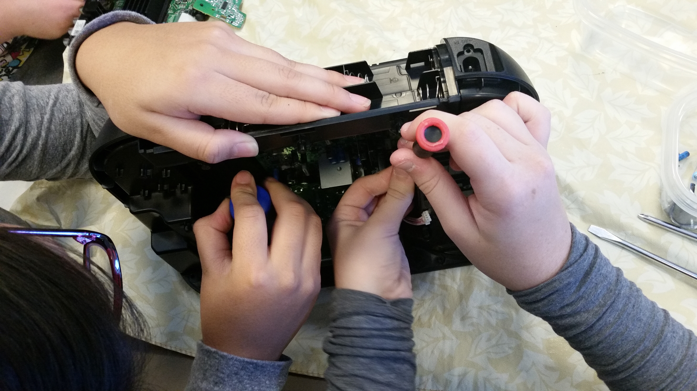
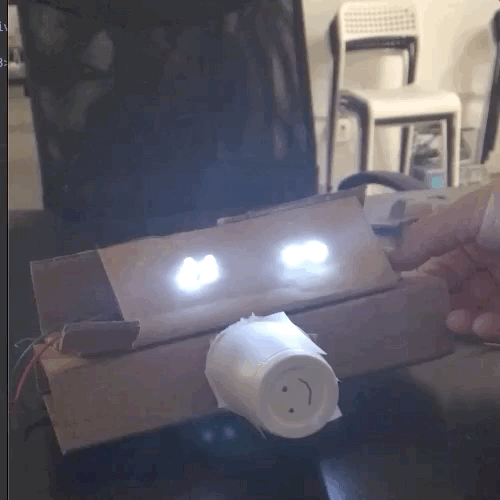

Teaching
On this page you can see some of the community workshops and classes I've run, as well as my educational outlook and strategies.Educational Goals
What can be gained in a classroom?
My educational outlook focuses first on the individual and their attitude. I believe that engineering is a practice of fastidious curiosity. A student must feel secure and confident in their capacity to experiment and manipulate their environment. To further these ends, my classrooms are inquiry centered and project based.
I generated the FAKTs model to align my classrooms around these learning paradigms:
I generated the FAKTs model to align my classrooms around these learning paradigms:
-
Feelings - How we handle our negative or demotivating reactions.
- Tolerating frustration - The longer you can sit in frustration, the greater your capacity for personal growth.
- Accepting failure - By acknowledging failure, we have the ideal conditions to exceed our past limitations.
- Trust in yourself - Self confidence enables confident exploration and discovery.
- Experiment - Novel ideas and experiments lead us towards discovery.
- Follow instructions with care - Rigorous attention to instruction allows engineers to build on the work of others.
- Respect others - Engieering is a group activity - we must all learn how to work effectively in groups.
- Vocabulary - Accurate and specific language enables self-sufficiency and effective communication.
- Immediately applicable skills - Hacker and tinkerer culture centers discovery and experimentation above formal study - jumping into a project as soon as possible enables a foundation to grow from
- Baseline for the future - No question is too complicated, every topic of interest should be made intelligable to the student, regardless of it's perceived difficulty.
- Systematic Reasoning - Taking things step by step allows for organized application of effort.
- Observation - Excellent engineers watch and learn from others.
- Curiosity - interest in the world centers growth and inspiration.
Actions - How we behave towards others and interact with our work.
Knowledge - Task-specific information about how to complete our work.
Thoughts - What's going on between our ears.
Workshops and Classes
Take Apart - All Ages
Skills exercised: Curiosity, tolerating frustration, trust in yourself, vocabulary, baseline for the future.
Together, we rip electronics apart and see what's inside. This activity is scaffolded based on age and developmental maturity.
For younger students, electronic parts are removed and sorted based on appearance. This gives a kinsesthetic understanding of components being both similar (all of these are capaciters) and different (they are different in size and color). When we have this gut-level understanding we can proceed on towards more and more abstract knowledge - such as noticing components tend to appear in certain locations, or more commonly in certain devices.
In teenagers the focus moves towards successful identification of components based on category. For example: identifying integrated circuits, capaciters, resistors, circuit boards, pins, busses, and inductors. This allows for forward-prediction of components, knowing in advance what to expect inside of a device prior to opening it up.
Adults tend to enjoy the simple pleasure of take apart, but to ensure appropriate learning goals this activity is scaled up into a miniature research project. Once a component is identified by cateogry, serial numbers are noted down and corresponding data sheets pulled from the internet. With this data sheet learners may then begin to note the anatomy/behavior of the component itself - pin numbers, maximum tolerable voltage, potential applications, etc.

Skills exercised: Experiment, systematic reasoning, trust in yourself, immediately applicable skills.
Using parts collected from take apart, learners practice (or try for the first time) soldering components together to build a small 'robot'. Additional materials such as cardboard, hot glue, buttons, and paint are supplied to channel aesthetic reasoning and further spark creativity.
For this workshop to run effectively, a take apart session must first occur - including effective work into the research stage in order to know how to use the parts previously collected.
Play-Doh Robots - Ages 8-13

Skills exercised: Experiment, systematic reasoning, trust in yourself, immediately applicable skills, observation, respect others.
This is the kid-friendly version of a garbage bot workshop. Conductive and insulating play-doh are made in advance of the workshop. Students are encouraged to experiment with batteries and components to learn about circuits, series / parallel wiring, and the functioning of 'expressive' components (buzzers, LEDs, motors, etc). Small objects such as beads, coins, nails, marbles, popsicle sticks, and stickers are freely available to merge experimentation with creative play. These materials are provided in mass containers to encourage group negotiation and cross-talk.